01
Сланец
продукт «Графит»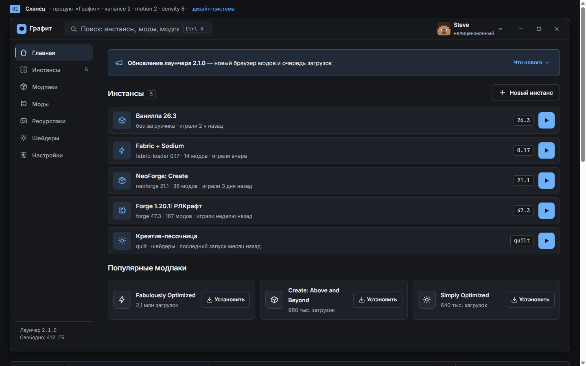
Списки-строки и моноширинные версии — лаунчер как аккуратный файловый менеджер. Один холодный голубой акцент только на действии: играть, обновить.
variance 2 · motion 2 · density 8
Дизайн-разведка для mc-launcher-v2 (Tauri 2 + React + TS + Tailwind). Режим продукта — Operate: сканируемость, консистентность, предсказуемость. Контент во всех макетах одинаковый — сравнивается только дизайн. Каждый вариант: главная + второй экран (страница инстанса / браузер модов) + состояния (hover, скелетон, пустое, ошибка).

Списки-строки и моноширинные версии — лаунчер как аккуратный файловый менеджер. Один холодный голубой акцент только на действии: играть, обновить.
variance 2 · motion 2 · density 8
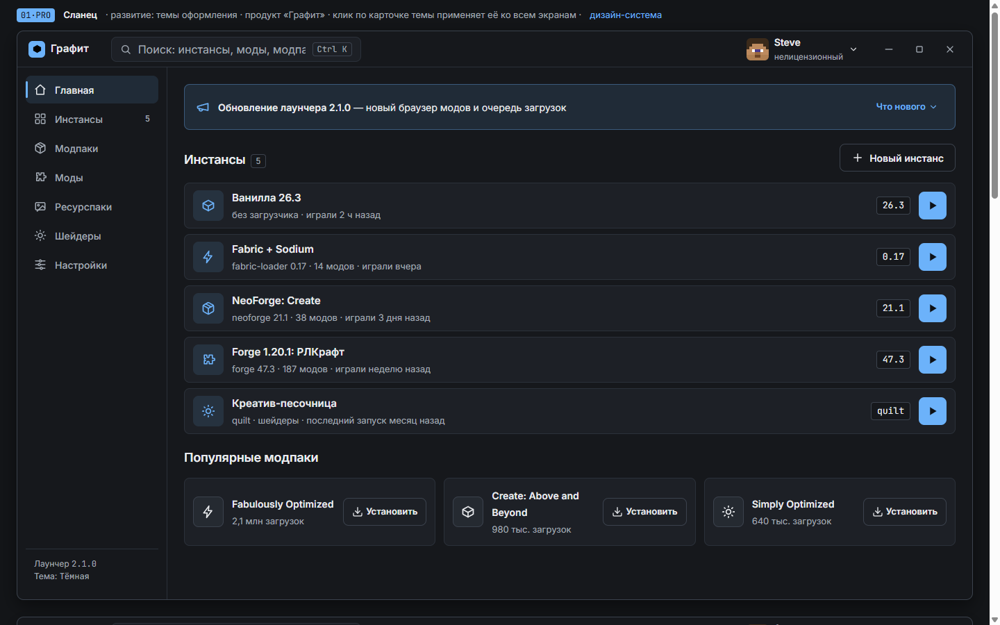
Полный интерактивный каркас: клик по навигации переключает экраны (Главная, Инстансы, инстанс с табами и логами, Модпаки, каталог Модов, Настройки со всеми разделами — Темы, Java и память, Загрузки с очередью, Профили, Логи, Расширенные). Страница «Темы» — как каталог CurseForge: карточки-превью по группам, галочка на выбранной, замки у премиума. Пять тем меняют только палитру, применяются живьём и запоминаются: тёмная, светлая, две сине-оранжевые для дальтоников и «Глубинный сланец» (дань игре — травяной акцент).
variance 2 · motion 2 · density 8 · 5 тем + 11 экранов, контраст проверен по каждой теме
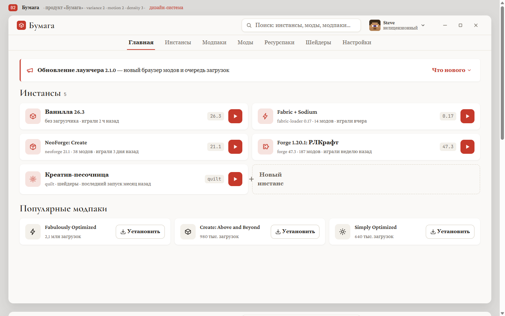
Читательская антиква на тёплом белом: инстансы — как оглавление журнала, браузер модов — как подборка статей. Мягкие тени вместо границ, киноварь — единственный цвет.
variance 2 · motion 2 · density 3
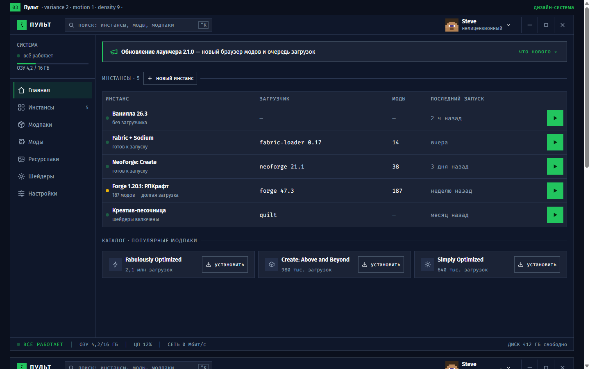
Инженерная консоль: таблица инстансов, LED-статусы с текстом, журнал событий и статусбар телеметрии. Зелёный означает «всё работает».
variance 2 · motion 1 · density 9
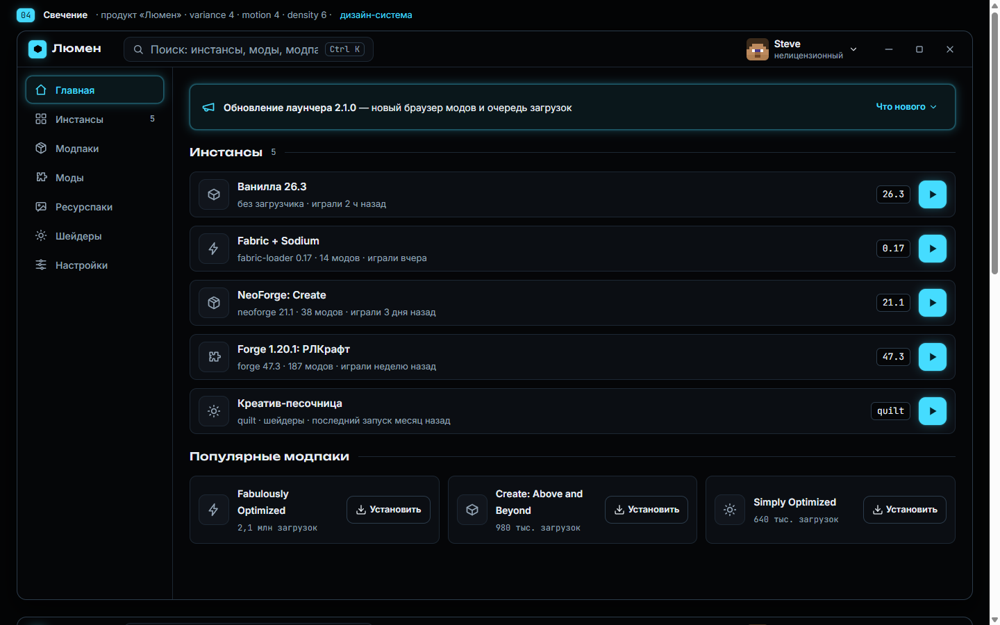
Глубокий чёрный и один светящийся циановый контур: активное светится, остальное молчит. Стекло с blur — только у модалки ошибки.
variance 4 · motion 4 · density 6
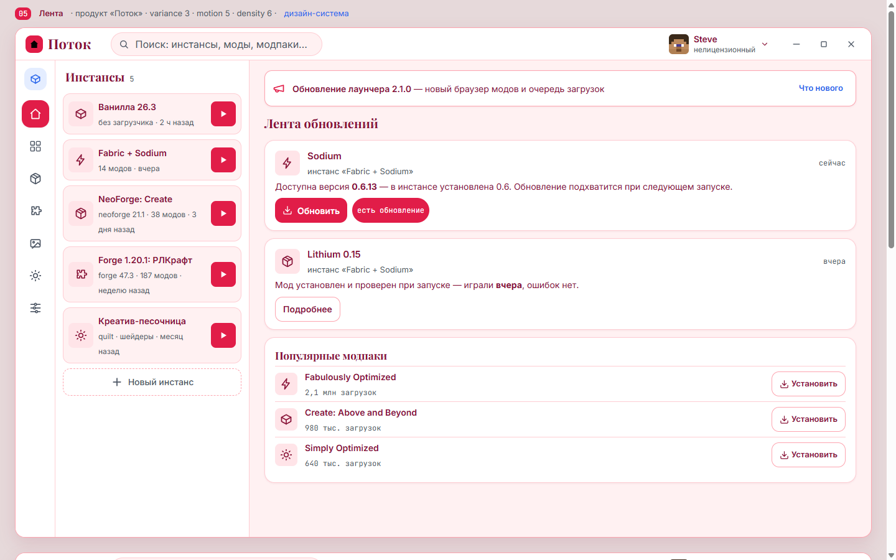
Лаунчер как соцсеть обновлений: лента модов в центре, инстансы колонкой слева, навигация узкой иконкой-рейкой. Действия — прямо в постах.
variance 3 · motion 5 · density 6
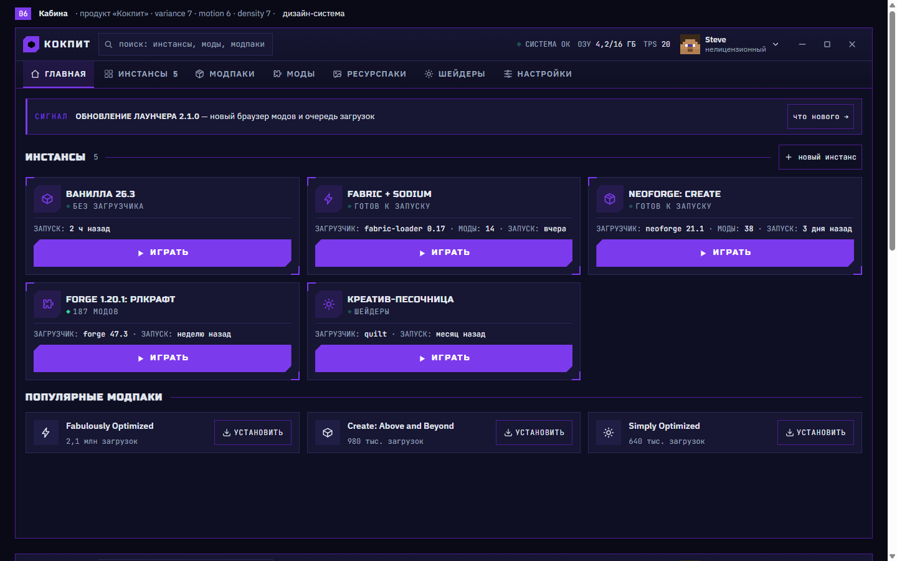
Игровая приборная панель: срезанные углы, скобки-уголки, телеметрия ОЗУ/TPS в шапке. Кнопка ИГРАТЬ — гранёная, как кнопка пуска.
variance 7 · motion 6 · density 7
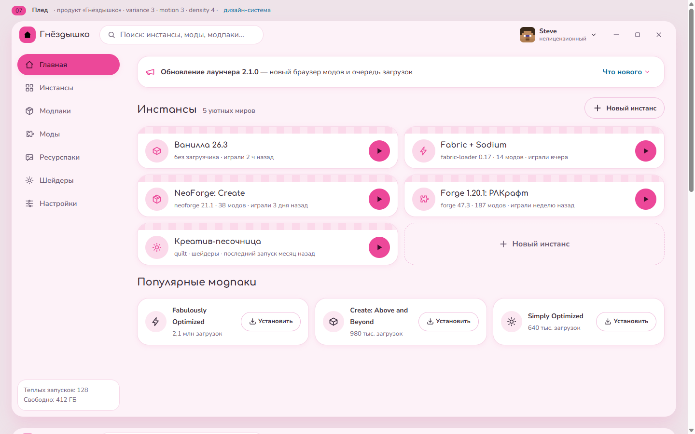
Уют: пастельная розово-кремовая гамма, радиусы 16+, «пледики»-обложки и кнопки-пилюли. Лаунчер, в который хочется возвращаться.
variance 3 · motion 3 · density 4
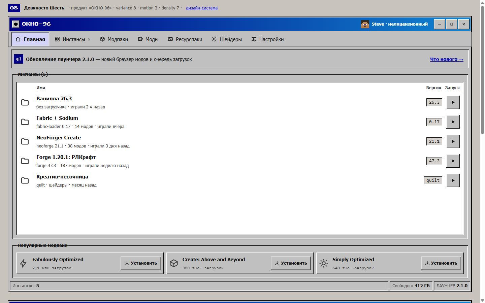
Ремикс Win95: бевели, синяя тайтлбар, «проводник» инстансов и системный диалог ошибки. Современная сетка под ретро-хромом.
variance 8 · motion 3 · density 7 · fallback (данных базы по Y2K нет)
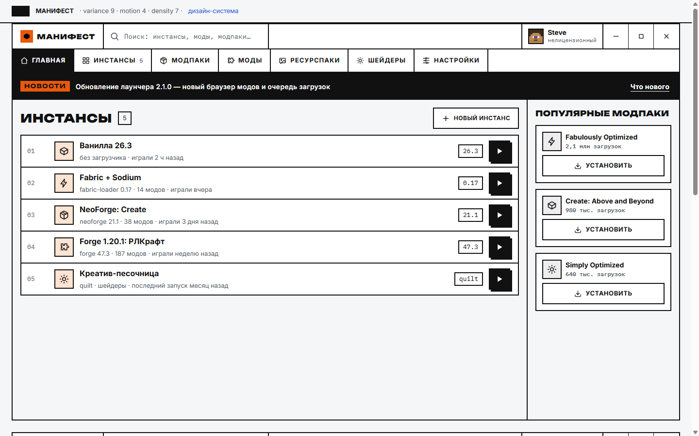
Брутализм: 2px чёрные линии, нулевые радиусы, мгновенные инверсии и тени-офсеты. Иерархию решает типографика, а не декор.
variance 9 · motion 4 · density 7
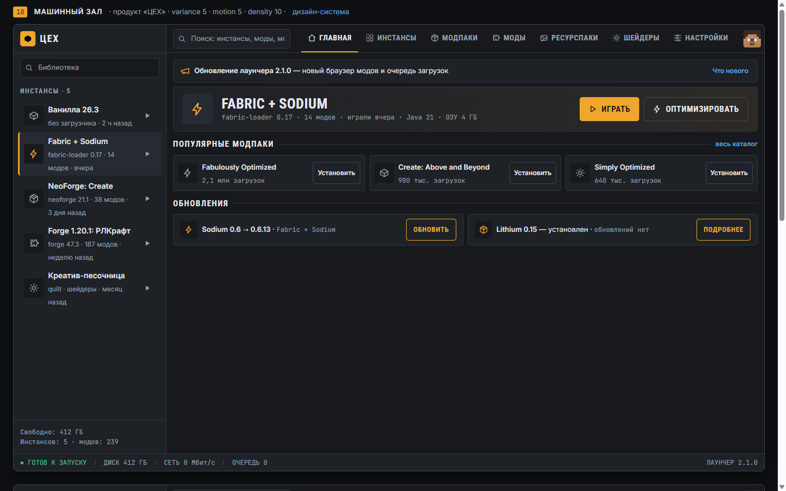
Плотный клиент в духе Steam: библиотека слева, featured-инстанс и полки справа, статусбар. Максимум данных без визуального шума.
variance 5 · motion 5 · density 10 · оверрайд палитры (см. MASTER)